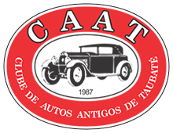

Portifólio
Cada site neste portfólio foi desenvolvido com o objetivo de resolver problemas específicos e atender às necessidades únicas dos clientes. Desde melhorar a presença online de pequenas empresas até criar plataformas educacionais interativas, cada projeto reflete meu compromisso com a inovação e a excelência. Explore os links abaixo para ver como cada site foi projetado para alcançar esses objetivos.
 O site foi criado para divulgar os cursos CAI do SENAI de Pindamonhangaba para o ano de 2024. Ele oferece informações detalhadas sobre os cursos disponíveis, incluindo datas, horários, ementas e requisitos de inscrição. O objetivo é facilitar o acesso dos interessados às oportunidades de formação técnica e profissional oferecidas pelo SENAI, promovendo o desenvolvimento de habilidades e competências essenciais para o mercado de trabalho.
O site foi criado para divulgar os cursos CAI do SENAI de Pindamonhangaba para o ano de 2024. Ele oferece informações detalhadas sobre os cursos disponíveis, incluindo datas, horários, ementas e requisitos de inscrição. O objetivo é facilitar o acesso dos interessados às oportunidades de formação técnica e profissional oferecidas pelo SENAI, promovendo o desenvolvimento de habilidades e competências essenciais para o mercado de trabalho.
O site do Clube de Carros Antigos de Taubaté foi criado para reunir entusiastas e colecionadores de veículos clássicos da região. Ele oferece informações sobre eventos, encontros, exposições e atividades do clube, além de uma galeria de fotos dos carros antigos dos membros. O objetivo é promover a preservação e a apreciação de veículos históricos, proporcionando um espaço para troca de conhecimentos e experiências entre os apaixonados por carros antigos.